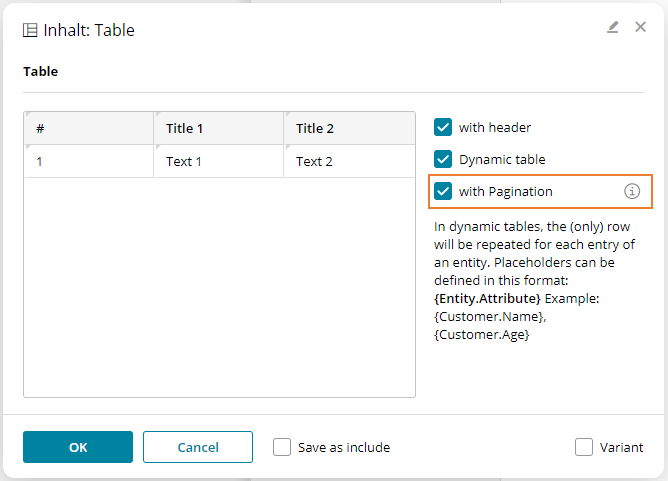

Architecture and Security
…
Website Development
Ex 3.5(Websites): Complex subchapters (Terms, Pagination, reCAPTCHA).
Websites
Terms
-
Website: The complete website. Contains several pages in different languages.
-
Page: A single page within a website. Pages appear in the navigation and have a content in different languages.
-
Include: A content snippet, which is saved locally once and can be referenced at any point within the website. We differentiate between built-in includes and custom includes. Built-in includes are content snippets that are included in the design.zip, custom includes are created by the user based on a content-element.
Concepts
-
CX-Placeholders can be used on every page of a website. Their scope generally involves a single page. For example the placeholder
"{Subject}"has to be mapped once for each page that uses it. A placeholder within an include (e.g. header or footer) only has to be mapped once. An example for that case would be the display of"{Username}"within the header of a portal-website. Placeholders can not be used within page-titles or the navigation. -
Custom includes can’t be nested. Technically, that would be possible, but it would need many checks and visualizations inside the content editor to detect potential infinite rekursions and give feedback to the user through reasonable error messages. For that reason we currently don’t support that feature.
-
An include can only be used once within the same page.
-
Multilingualism: All contents and their includes are always created in every active language for their website. E.g.: The website is configured to be German and Italian. On the creation of a new page, two pages will be created: one for Italian and one for German (including their dummy-contents). Within the UI there is no option to create a single page in one specific language only. If necessary, a CX-condition may be used to hide a page for a specific language inside the navigation-tree.
Handlebars, Templates
The template-engine Handlebars is available to the design developer on runtime. The templates are parsed server-sided. We’re using the Java-Port by JKnack. In the design, handlebars templates are important especially for display of the navigation.
Handlebars templates can only be used for parts of a website that can’t be edited by the user. We set that rule, because templates are parsed server-sided. When the content-editor receives the HTML source, the templates have already been resolved. If the user would edit a content-element that contained handlebars syntax, we could only save the rendered content that the user edited. The original handlebars code would be lost.
For that reason, handlebars should mostly be used for includes that can’t be edited. Examples for such includes are the master (design.html), the navigation or areas outside a dropzone.
This mechanism can also be used conciously to set multilingual default texts, which are deposited inside the website.json file. An example for an include for the website header in handlebars code could look something like this:
<div data-bsi-element="master-header">
<img src="img/nyan-cat.gif">
<h1 data-bsi-element-part="plain-text">{{bsi.nls "website.title"}}</h1>
</div>On the initial rendering of the page inside the content editor, the text "website.title" is resolved. As the user saves the page, the initial handlebars code is substituted by the actual text.
Handlebars syntax may also be used for the content-elements.html file; especially for the NLS-helper to define multilingual default texts for each content-element.
Important: Files that contain handlebars syntax aren’t valid HTML documents. They shouldn’t be handled with HTML parsers like JSoup, otherwise the handlebars syntax gets corrupted. Files that include handlebars code should use the suffix .hbs. IntelliJ supports this syntax with respective plugins.
bsi.nls
This helper is used to display localized texts or resources inside the design. The syntax looks like this: {{bsi.nls "[textKey]"}}.
It can also be used inside the content-elements.html file to deliver localized default texts for different languages.
Text keys are created inside the design.json at the property nls. Text that doesn’t depend on the locale is defined with the key *. The resolution follows from the most specific locale up to the default, e.g.:
{
"nls": {
"hello.world": {
"*": "Hello World",
"de": "Hallo Welt",
"de-CH": "Sali Wält"
}
}
}Website variables
Following variables are available to the design developer on runtime. The variables can be used in mustache-templates, e.g.: {{navigation.activePage.contentId}}.
General (Root)
-
title (String): Title of the website. Matches the field "Title" in the website-masters editor. Can be used in combination with the title of the current page to display the title of the HTML document, e.g.:
{{title}} | {{navigation.activePage.pageTitle}}. -
language (String): Current language as it’s used in the
langattribute of the HTML tag, e.g.:de. -
locale (String): Complete locale. The locale is used to resolve text keys through the
bsi.nlshelper, e.g.de-CH. -
navigation (Object): Contains the hierarchical navigation tree, example follows.
-
paginationInfo (Object): Contains the information for pagination. This object is only filled if the pagination feature is specified in the
design.jsonfile.
Navigation Item
-
active (Boolean): True, when the navigation element (page) or the HTML site is active.
-
id (UUID): Primary key according to table BSI_WEBSITE_REV_NAV#ID.
-
contentId (UUID): Primary key according to table BSI_WEBSITE_REV_CONT#ID.
-
url (String): URL according to table BSI_WEBSITE_REV_NAV_LOCALE#URL.
-
title (String): Title according to table BSI_WEBSITE_REV_NAV_LOCALE#NAVIGATION_ITEM_TITLE.
-
folder (Boolean): True, when BSI_WEBSITE_REV_NAV_LOCALE#NAV_ITEM_TYPE = "folder". Used for separation between pages and folders.
-
level (Integer): Recursion-level of the navigation element, starting with 0 = Root.
-
image: Absolute URL for the navigation image according to table BSI_WEBSITE_NAVIGATION#IMAGE.
-
metadata: JSON metadata object according to table BSI_WEBSITE_NAVIGATION#METADATA.
-
localizedUrls: Object with URL as value for the language-change widget and locale as key.
Pagination Info
-
currentPageNo: Current page number
-
numDataRecordsPerPage: Number of records per page
-
firstDataRecordOffset: Index of the first record on the current page
-
totalNumDataRecords: Total number of existing records
-
firstPageUrl: URL of the first page
-
lastPageUrl: URL of the last page
-
lastPageNo: Page number of the last page
-
previousPages: Contains information on lower page numbers that are relevant for pagination.
-
pageNo: Page number
-
url: URL of the page
-
index: Offset of the page number to the current page number
-
-
nextpages: Contains information on higher page numbers that are relevant for pagination. The information set is exactly the same as for previousPages and is therefore not listed anew here.
Example JSON
This example shows the possible content of a variables object on runtime.
{
"language": "de",
"locale": "de-CH",
"navigation": {
"activePage": {
"id": "1006",
"contentId": "2006",
"url": "ueber-bsi.html",
"title": "Über BSI",
"level": 0,
"active": true,
"localizedUrls": {
"de-CH": "ueber-bsi.html",
"en-CH": "about-bsi.html"
}
},
"index": {
"id": "1001",
"contentId": "2001",
"url": "index",
"title": "Willkommen bei BSI",
"level": 0
},
"items": [
{
"id": "1002",
"contentId": "2002",
"url": "loesungen.html",
"title": "Lösungen",
"level": 0
},
{
"id": "1003",
"contentId": "2003",
"url": "branchen.html",
"title": "Branchen",
"folder": true,
"level": 0,
"items": [
{
"id": "1004",
"contentId": "2004",
"url": "banking.html",
"title": "Banking",
"level": 1
},
{
"id": "1005",
"contentId": "2005",
"url": "health.html",
"title": "Health",
"level": 1
}
]
},
{
"id": "1006",
"contentId": "2006",
"url": "ueber-bsi.html",
"title": "Über BSI",
"level": 0,
"active": true
}
]
}
}{{#navigation}}
<nav class="navigation">
{{#items}}
<ul class="nav-item-container level-root">
<li class="nav-item level-root">
<!-- root level -->
{{#active}}
<span class="nav-item-active">{{title}}</span>
{{/active}}
{{^active}}
<a href="{{url}}">{{title}}</a>
{{/active}}
</li>
{{#items}}
<ul class="nav-item-container level-1st">
<!-- 1st level -->
<li class="nav-item level-1st">
{{#active}}
<span class="nav-item-active">{{title}}</span>
{{/active}}
{{^active}}
<a href="{{url}}">{{title}}</a>
{{/active}}
</li>
</ul>
{{/items}}
</ul>
{{/items}}
</nav>
{{/navigation}}Configuration files
This chapter describes the necessary configuration files.
Website-specific metadata inside design.json
The design.json file is a metadata file for structured configuration data.
Example for the design.json file for website designs:
{
"schemaVersion": "1.0",
"defaultLocale": "de",
"locales": ["de", "en"],
"nls": {
"page": {
"*": "Seite",
"en": "Page"
}
},
"website": {
"maxNavigationLevel": 2,
"pagination": {
"numDataRecordsPerPage": 20,
"numAdjacentPages": 3
},
"includes":{
"__page__": {
"name": "Vorlage für Inhaltsseiten",
"reference": "__page__",
"file": "include/page.html"
},
"navigation":{
"name":"Navigation",
"reference":"navigation",
"file":"include/navigation.hbs"
},
"header":{
"name":"Kopfzeile",
"reference":"header",
"file":"include/header.html",
"editable":true
},
"pagination-element": {
"name": "Pagination",
"contentType": "pre-defined",
"file": "include/pagination-element.hbs",
"editable": false
},
"footer":{
"name":"Fusszeile",
"reference":"footer",
"file":"include/footer.html",
"editable":true
}
}
}
}-
schemaVersion: Needs to be set to 1.0, might be relevant for changes in later versions. -
defaultLocale: Default language (must be contained inlocales). -
locales: List with languages (e.g.:en,de,de-CH). -
nls: Contains a map with NLS keys, which can be used within the .hbs files withbsi.nls. -
website:maxNavigationLeveldefines the maximum depth of the navigation (level of the hierarchy) that can be displayed by the design. To allow better structuring of pages and folders, the website editor allows the creation of websites with greater depth, but such pages or folders can’t be selected through the navigation on runtime. However, an internal link from one page to another page with greater depth is still possible. -
website:paginationis used for pagination (see Pagination). The propertynumDataRecordsPerPagecan be used to specify how many records are to be displayed simultaneously on a page. The propertynumAdjacentPagesdescribes how many lower and higher page numbers are to be displayed in the pagination navigation. For example, ifnumAdjacentPagesis set to 3 and you are on page 2, then the maximum number of pages displayed in the navigation is 1, 2, 3, 4 and 5. -
includes: See below.
Includes
All files that are inherited to the database on the creation of a website as navigation item or include have to be referenced in the design.json file. All includes from the design.zip are inherited automatically with content-type=built-in, unless content-type=pre-defined is set explicitly.
The file design.html matches the master and is automatically created inside the website internally as an include with the reference master. For that reason this include should not be defined in the design.json file, as it is defined already.
The minimal include is page, which works as a template for new pages within a website.
The key, which is used for the bsi:include-tags, is used as a unique reference to the include.
For each include, the following properties can be configured:
-
name: Displayed name of the include. -
file: Points to a file inside the zip archive, relative to the root of the zip file. Only .html and .hbs are allowed. -
contentType:built-in(default, if not set manually),pre-definedanduser-defined. -
editable: True, when the include can be edited in the content editor by the user. Default is true. Must beeditable: falsefor all includes that use handlebars.
design.html
The design.html file is equivalent to the "master" of the website. On the creation of a website, an include "Design" with this file’s content is created. This include can’t be edited by the user. However, the design can reference other includes that may be edited, so that e.g. the footer can be edited by the user.
A design can contain exactly one include for a page (attribute "pageid"). For the editor this include has a special meaning: when displayed in the editor, the full page (including the master) is displayed, but when saved, only the content of the respective page is saved.
Advice: There should be no tags of the template-engine used for includes or pages that the user may edit.
<html>
<head>
<title>{{site.title}} | {{navigation.activePage.title}}</title>
</head>
<body>
<header>
<h1>Unicorn Inc.</h1>
{{#navigation.index.active}}
<img src="logo.png" width="100" height="100">
{{/navigation.index.active}}
{{^navigation.index.active}}
<a href="{{navigation.index.url}}"><img src="logo.png" width="100" height="100"></a>
{{/navigation.index.active}}
<bsi:include id="navigation" editable="false">
</header>
<!--
ActivePage is always set by the framework. When the root-URL '/' is loaded,
'index' is used automatically.
When the include-tag is resolved, it's replaced by the respective HTML-snippet.
Having a single root-element (e.g.: <div>, <p>, ...), that capsulates the entire DOM of the include, is a technical requirement for any include.
When changed, the attribute "data-ce-include-id" is set on this element with the value of the original attribute "id".
-->
{{#response.ok}}
<bsi:include reference="{navigation.activePage.contentId}" editable="true">
{{/response.ok}}
<!--
This include is only loaded when the reposnse is != OK. It takes a special function to set response.ok to false in the content-editor, to even make it editable in the editor.
-->
{{^response.ok}}
<bsi:include id="error" editable="false">
{{/response.ok}}
<footer>
<!--
The include "design" can't be edited, so the part that should be editable by the user needs to be transfered to a separate include. -->
<bsi:include id="footer-text" editable="true">
</footer>
</body>
</html>The include "footer-text" loads the built-in include footer-text.html. This file looks like this:
<div data-ce-content-element="footer-text"
data-ce-element-part="formatted-text">
This is a default-text for the footer. This text can be changed in the editor by the user.
</div>Content-Editor
Before the content is displayed in the editor, it has to be preprocessed by the WebsiteProcessor. It resolves includes and starts the template-engine. Just like the live-website, the content editor also creates an object with website variables.
Here is an example for content, when it’s loaded from the database:
<bsi:include reference="footer-text">
{{title}}Here is an example for content, when it’s shown in the editor:
<div
data-bsi-include-reference="footer-text"
data-bsi-element="footer-text"
data-bsi-element-part="formatted-text">
Ipsem Lorum
</div>
BSI WebsitePagination
Pagination can be used to distribute data supplied by an external system (e.g. via REST) to several pages on a website, so that only part of the data is displayed on one page. With Next and Back buttons on the website page, it is then possible to display a separate set of data on each page.
The pagination must be defined via website: pagination in design.json and provided via an include. The include must exist in the design.json file and have the special content type pre-defined (see Website-specific metadata inside design.json). The include itself should have the extension .hbs and use handlebars. The possible values for the Mustache templates are documented in the chapter on website variables (see Pagination Info). Besides, the attribute data-bsi-hide-edit-button should be set, as includes that use handlebars should not be editable in the website editor. The following is an example of a possible template:
<div class="pagination-element" data-bsi-element="pagination-element" data-bsi-hide-edit-button="true">
<a href="{{pagination.firstPageUrl}}">First Page</a>
{{#each pagination.previousPages}}
<a href="{{url}}">[{{pageNo}}]</a>
{{/each}}
{{pagination.currentPageNo}}
{{#each pagination.nextPages}}
<a href="{{{url}}}">[{{pageNo}}]</a>
{{/each}}
<a href="{{pagination.lastPageUrl}}">Last Page</a>
</div>This template (include) is then rendered by the template engine at runtime. One possible output is the following. Everything except page 20 are links pointing to the respective pages.
[First Page] [18] [19] 20 [21] [22] [Last Page]
The data to be rendered via pagination can finally be displayed with the table content element. For this, a content element with the element part table should be extended by the attribute data-bsi-show-pagination-field. The following is an example of a possible table template:
<div data-bsi-element="table" data-bsi-element-part="table" data-bsi-show-pagination-field="">
<table>
<tr>
<th>#</th>
<th>Title 1</th>
<th>Title 2</th>
<th>Title 3</th>
</tr>
<tr>
<td>1</td>
<td>Text 1</td>
<td>Text 2</td>
<td>Text 3</td>
</tr>
<tr>
<td>2</td>
<td>Text 1</td>
<td>Text 2</td>
<td>Text 3</td>
</tr>
</table>
</div>If the attribute data-bsi-show-pagination-field is set, the checkbox with Pagination will be displayed in the configuration of the table content element. In order to use pagination, the checkbox should be activated.

Limitations
There are some limitations to pagination:
-
Pagination has only been implemented for tables (i.e. the element part
table). -
The pagination can only be used directly in a website. We do not support the embedding of such a table in an include. Other content (for example for landing pages) is also not supported.
-
To enable a meaningful display of the handlebars code in the website editor, the Mustache templates are rendered when the editor is initially loaded. Afterwards, the rendering happens only exceptionally. This can lead to the display being incorrect if page-dependent elements (such as {{navigation.activePage}}) are used in the template.
Metadata / Images for the navigation

Each page and each folder of a website can have JSON metadata and an image to describe the navigation. These two elements are special, because they can only be edited programatically and within a project-specific step. A possible use case is a REST webservice, which is embedded to the design through javascript. The project-specific step can return the image and the metadata on a GET request. This allows the rendered website to give images and information to the navigation.
These two attributes are invisible per default. However, they can be enabled thorugh the CX setting Website-Editor. Both attributes are the same for every language, so it’s not possible to deposit different images for a German and an English website.
Security - Google reCAPTCHA
It’s highly advised to use the Google reCAPTCHA service "I’m not a robot", when using username/password authentification with non-internal users (public). For that we use the optional CX module com.bsiag.studio.media.googlerecaptcha, which can be configured in the CX settings.
Example for including the dependency in the CX app and the dev pom.xml:
<!-- google reCAPTCHA service for website step -->
<dependency>
<groupId>com.bsiag.studio</groupId>
<artifactId>com.bsiag.studio.media.googlerecaptcha</artifactId>
</dependency>A script can be included on the website’s design.html:
<script src="https://www.google.com/recaptcha/enterprise.js" async defer></script>The captcha-field can be added to the login form of the content-elements.html as follows:
<form ... data-bsi-element="login-form">
...
<!-- Content Element: Google reCAPTCHGA Enterprise -->
<div data-bsi-element-part="form-field" class="form-field-container form-field">
<label data-bsi-remove-if="live">{{bsi.nls "captcha"}}</label>
<input data-bsi-remove-if="live" type="text" data-bsi-form-field-type="captcha" value="Google reCAPTCHA" id="g-recaptcha-response" name="g-recaptcha-response">
<div class="g-recaptcha" data-sitekey="the site key from the google api recaptcha registration" data-action="login">
</div>
</div>The label text can be added to the design.json as follows:
"captcha": {
"*": "Captcha",
"de": "Captcha"
},After that, the field ID of the captcha field (on the website, that uses the design, simply open the edit dialogue and scroll down to the captcha field ID) has to be set to g-recaptcha-response. This value has to match the settings of the Google reCAPTCHA in the administration view.
The last step is to generate a reCAPTCHA key on the Google Cloud of the customer/company and register it in the settings under Administration - Customer Experience - Settings - Google reCAPTCHA Settings.
For local testing, the URL of the BSI CX website can’t be localhost. For this purpose, the local domain bsiag.local may be used. Simply go to the administration view - CX - Settings under base URL for public links and register a second path, e.g. bsiw0160:
{
"_type": "start.BaseUrlSetting",
"default": false,
"inboundBaseUrl": "http://bsiw0160.bsiag.local:8085/inbound/default",
"qualifier": "default",
"resourceBaseUrl": "http://bsiw0160.bsiag.local:8085/dev/resources"
}Then select this URL on the smart field base path on the website step.
Here is an approximate guide for the creation of a reCAPTCHA site on the example of BSI (customers have to adapt it to their company):
-
Create project: BSI CX - Website Step → projectId=bsi-cx-website-step
-
Add the service
reCAPTCHA Enterprise APIto the project -
Create login/access data for that api by creating a service account
Service account for bsi cxwith rolerecaptcha enterprise agent→ serviceAccountId=service-account-for-bsi-cx -
Add access key (json file) for that agent service account in IAM section of Google Cloud → credentials json file
-
Create reCAPTCHA site key here (this is just an example)
-
Add domains bsi-software.com and bsiag.local to site → recaptchaSiteKey=6Lcxp-…._lWrq
Documentation:
Creation of websites from existing landingpage templates
The following steps are necessary to create a website template from an existing landingpage template:
-
For navigation inside the website, the navigation has to be created inside an include.
-
Includes for the header- and footer-area have to be defined inside the
design.jsonfile. Furthermore, the Page-Include has to be defined. That area contains the proper content of the website. -
For landingpages images and other resources of the design can be referenced with relative paths. Because the base URL of a website points to the location of the website and not to the design, the handlebars template
{{designBaseUrl}}needs to be put in front of every design resource URL. For example,"img/my-image.jpg"has to be converted to"{{designBaseUrl}}/img/my-image.jpg". The handlebars template is replaced with the design’s correct URL by the CX server on runtime.
HTML Structure Reference
Ex 1.9(Structure Reference): Reference for structural blocks.
Structure Reference
The file design.html contains the frame of the design and must include at least one outermost dropzone.
It must contain valid, XHTML conform HTML with Doctype, <html>, <head> and <body> tags.
The individual content elements are HTML snippets that are inserted into the content using drag & drop.

Security: Content Security Policy (CSP)
Ex 1.8(Content Security Policy (CSP)): CSP and HTTP headers.
Content Security Policy (CSP)
If a design requires resources from external servers, e.g. from a Content Delivery Network (CDN), two settings must be checked in the BSI Customer Suite and, if necessary, adjusted according to the needs of the design. The settings can be configured by a user with the appropriate permissions in the BSI Customer Suite administration.
| Observe the notes on the integration of CSS and scripts in chapter Control Attributes. |
HTTP headers for public links
The HTTP headers including CSP settings for CX landing pages and websites are configured here. These are relevant for displaying the landing pages and websites in the end user’s browser.
HTTP headers for the index page of the BSI Customer Suite
The HTTP headers including CSP settings for the index page of the BSI Customer Suite are configured here. This includes the CX Content Editor. This setting overrides the server-side configured default values for CSP.
This setting should be configured more restrictively than the setting for landing pages and websites above. Only what is absolutely necessary for error-free display in the content editor should be allowed. As a rule, styles and fonts are allowed, but not JavaScript.
| The CSP settings configured here apply to the entire BSI Customer Suite GUI, not just the CX Content Editor. |
Send us an e-mail and let us know.